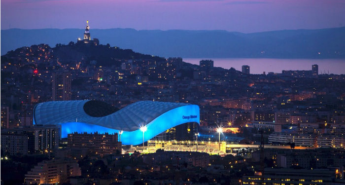
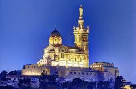

LE VIEUX PORT DE MARSEILLE
Le Vieux-Port de Marseille est l’un des symboles de la ville, situé en bas de la fameuse Canebière. Rassemblements, grands événements, feu d’artifice, il est le point de repère des Marseillais ! Prendre un selfie sous l’Ombrière, se balader le long du quai et observer les pêcheurs qui partent en mer, découvrir le magnifique patrimoine entourant le Vieux-Port, faire une mini-croisière sur le Ferry Boat… Les activités ne manquent pas dans ce lieu incontournable ! Pour les plus gourmands ne ratez pas le marché aux poissons tous les matins, et si vous êtes plutôt d’humeur florale il y a même le marché aux fleurs le mardi et samedi matin. Alors, rendez-vous au Vieux-Port sous l’Ombrière ?

LE STADE VELODROME
La première pierre de l'enceinte est posée le 28 avril 1935 par Georges Ribot.Le 13 juin 1937, le stade Vélodrome ouvrait pour la première fois ses portes sur le boulevard Michelet à Marseille et devenait le nouveau temple du football local, emmené par son club mythique l’Olympique de Marseille (OM). Le stade Vélodrome a été inauguré par une victoire en match amical face aux Italiens du Torino. Auparavant, les Olympiens se produisaient dans le vétuste stade de l’Huveaune. Le Stade Vélodrome portait alors bien son nom, puisque des compétitions cyclistes y étaient régulièrement organisées. Peu à peu, les gradins ont “grignoté” la piste cyclable qui bordurait le terrain. A l’occasion de la Coupe du Monde 1998, le stade a été totalement rénové et a vu sa capacité portée de 42 000 à 60 000 places. Le record d’affluence (58 897 spectateurs) remonte à la réception de Newcastle, en demi-finale retour de la coupe de l’Uefa, en 2004. Les quatre tribunes portent des noms de sportifs (le coureur à pied Jean Bouin, le cycliste Gustave Ganay), d’une figure historique de la peste de 1720 (Virage Sud Chevalier Roze), mais aussi d’un supporter charismatique disparu en 2000 (Virage Nord Patrice De Peretti). Un projet d’agrandissement, de modernisation et de couverture totale du Vélodrome a été mis en chantier en 2011, en vue de l’Euro 2016. L’enceinte accueille désormais 67 000 supporters.
NOTRE DAME DE LA GARE
L’histoire de Notre-Dame de la Garde à Marseille a débuté il y a près de 800 ans. Dite la Bonne Mère, elle surplombe la cité phocéenne et protège les habitants, implantée sur la colline de La Garde, du haut de son altitude à 150 mètres.
